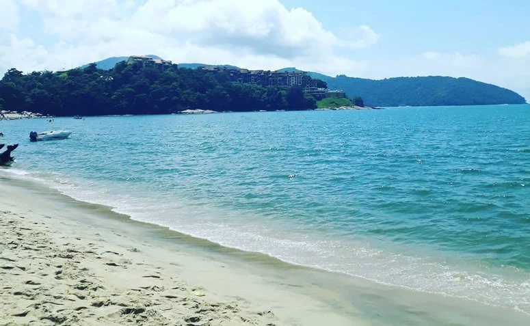
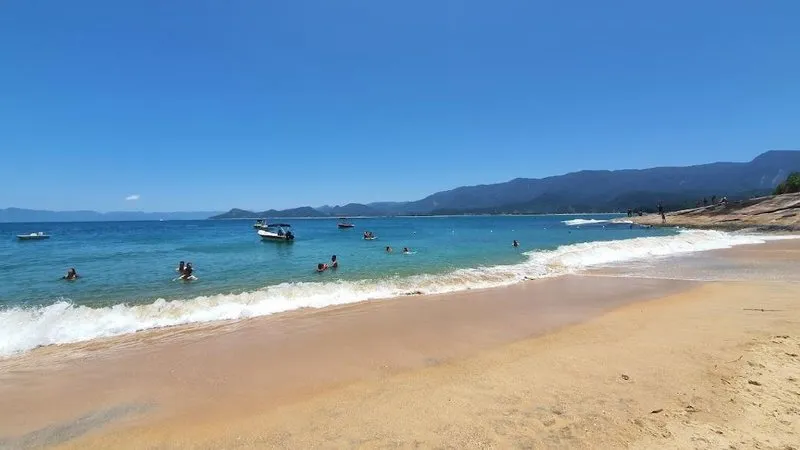
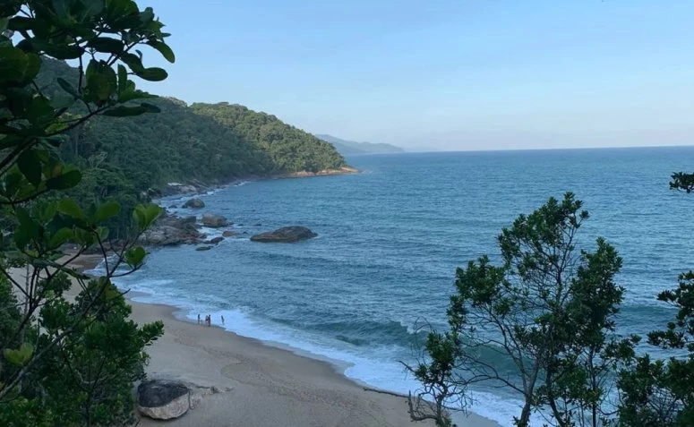

Praia da Mococa

A Praia da Mococa é mais uma da lista para curtir em família, com mar raso e calmo que faz a alegria das crianças. O local é bem tranquilo, cercado pela natureza e, ao mesmo tempo, oferece boa estrutura ao turista.
Como chegar
A melhor forma para chegar até a praia é partindo do centro de Caraguatatuba. De carro, o acesso é pela Rodovia BR-101, sentido Ubatuba, em uma viagem de aproximadamente 20 minutos.
Praia da Cocanha

A Praia da Cocanha tem todos os requisitos para se tornar uma das suas favoritas de Caraguá. Lá você encontra mar limpo e tranquilo para um delicioso banho, uma extensa faixa de areia branca e fofinha e uma vista incrível para a Ilhota da Cocanha.
Como Chegar
A Praia da Cocanha fica logo antes da Mococa, na região norte de Caraguatatuba, sentido Ubatuba, a aproximadamente 11 km do centro de Caraguatatuba. Chegar na Cocanha é fácil, pois há placas indicativas.
Praia Brava

Como o nome já alerta, a Praia Brava é para os fortes. Ela é bonita, preservada e de natureza selvagem. Seu mar agitado e de ondas fortes não agrada muito aos banhistas, sendo mais convidativa para surfistas. Se essa é a sua praia, vá preparado(a) para passar o dia, pois lá você não encontra nenhuma estrutura.
Como chegar
Localizada a 4 km do centro de Caraguatatuba, a Praia Brava fica localizada entre as praias de Martin de Sá, ao sul, e do Capricórnio, ao norte. Parte do caminho para a praia pode ser feito de carro